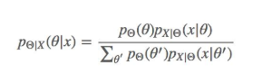
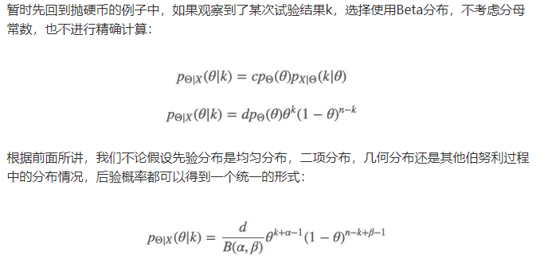
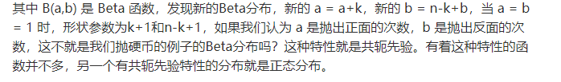
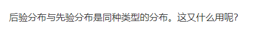
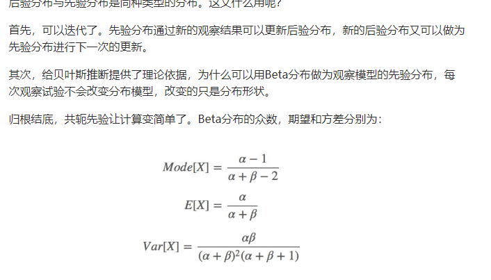
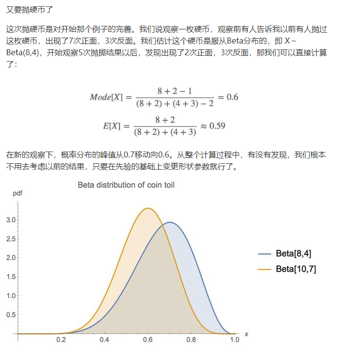

Beta分布与最大后验估计(MAP)
Beta分布
- 二次分布:抛n次硬币出现k次正面的概率
- 几何分布:抛第t次时，该次为第一次出现正面的概率
- 帕斯卡分布:抛第t次时,第k次出现正面
可以发现以上可以用一个统一分布来描述
a,b为形状参数
B为归一化函数
理解1
首先抛开B。看看简单的变体$f(x|\alpha,\beta)=x^\alpha(1-x)^\beta$
对于贝叶斯主义者，不应该使用频率主义，要把概率当做随机变量。
如抛出7次正面，3次反面。概率分布是关于X的函数.
$f(x|7,3)=x^7(1-x)^3$
该函数在0.7处取得最大值，说明极有可能正面概率是0.7
几种特殊分布
1.a=b=1时为均匀分布，a=b时
用于贝叶斯推断
在推断中，我们往往在意模型的参数，对于贝叶斯主义来说，这些参数不是一个确定的值，而是服从某个分布。记参数为[随机变量]$\theta$
现在我们有了一个观察$X=(X_1,X_2,….,X_n)$
这些观察可以看做是在$\theta$下的条件分布
于是现在该有的东西都有了，我们可以利用贝叶斯求出在x下\theta的概率 (后验概率,通过观察而得到的)

共轭先验(Conjugate prior):





Beta分布下的MAP(最大后验估计)
考虑最大后验公式
其中$\theta$ 服从Beta分布 (要运用贝叶斯的观点,参数不是一个定值,也是服从某个概率分布的)
于是,有
最左边的是进行概率归一化用，是一个常数。因此取对数得到C
接下来
与似然函数相同，又$L(\theta)=\prod\theta^{x_n}(1-\theta)^{1-x_n}$
这里假设X服从的是伯努利分布 x_n=1 或 0
于是有